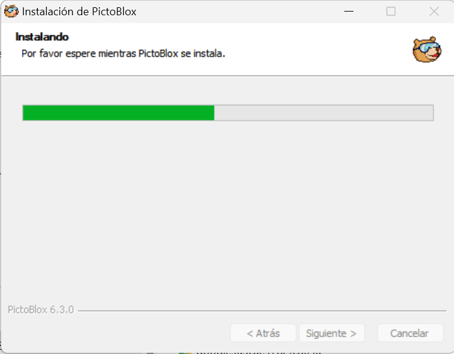
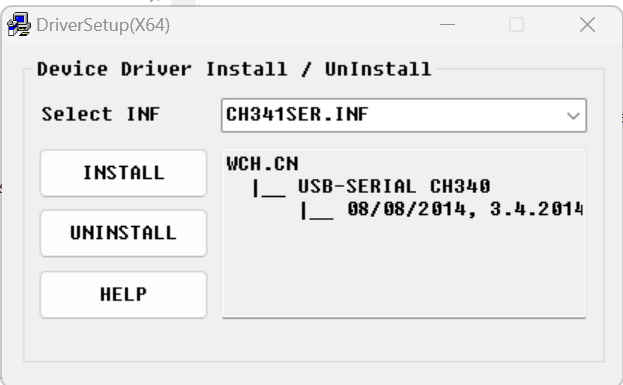
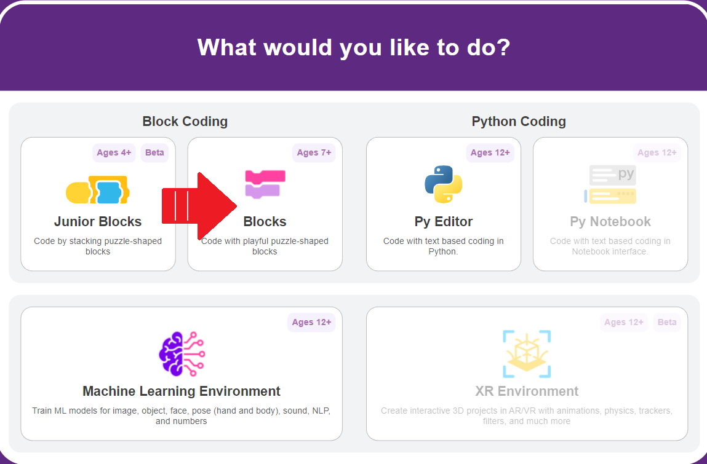
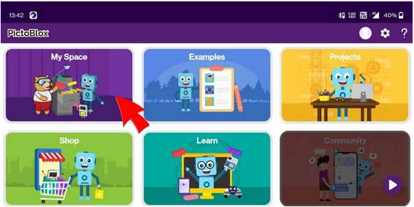
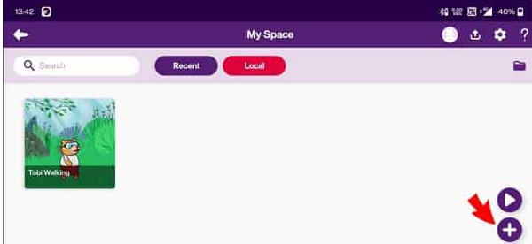
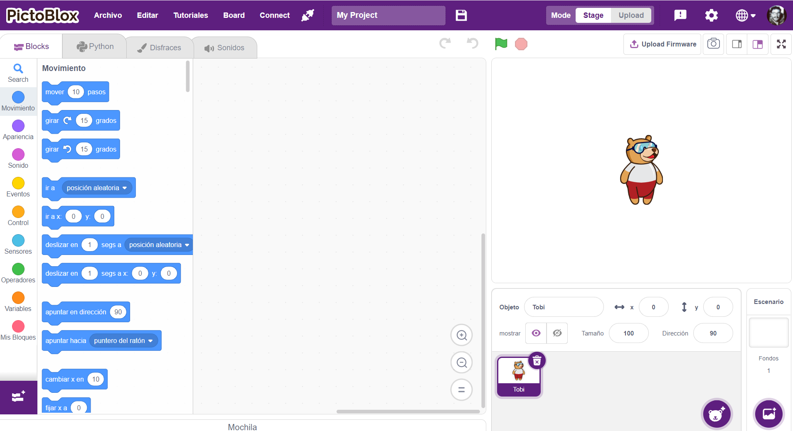

Cargamos Pictoblox
1.- Descargamos Pictoblox de su sitio web oficial y lo instalamos en nuestra PC:
En el caso de la instalación para PC, antes de finalizar la instalación, Pictoblox se ocupa de instalar los drivers (programas) para que mi PC reconozca a la placa Arduino, cuando ésta se conecte por el puerto USB a nuestra computadora (hacer clic en INSTALL).
2.- Al iniciar Pictoblox se nos presenta la primer pantalla de inicio:
|
Pantalla de inicio en su versión para PC:  |
Pantalla de inicio en su versión para Android/iOS:   |
3.- El nuevo archivo se observa así:

¡¡Ya estamos listo para comenzar a programar!!